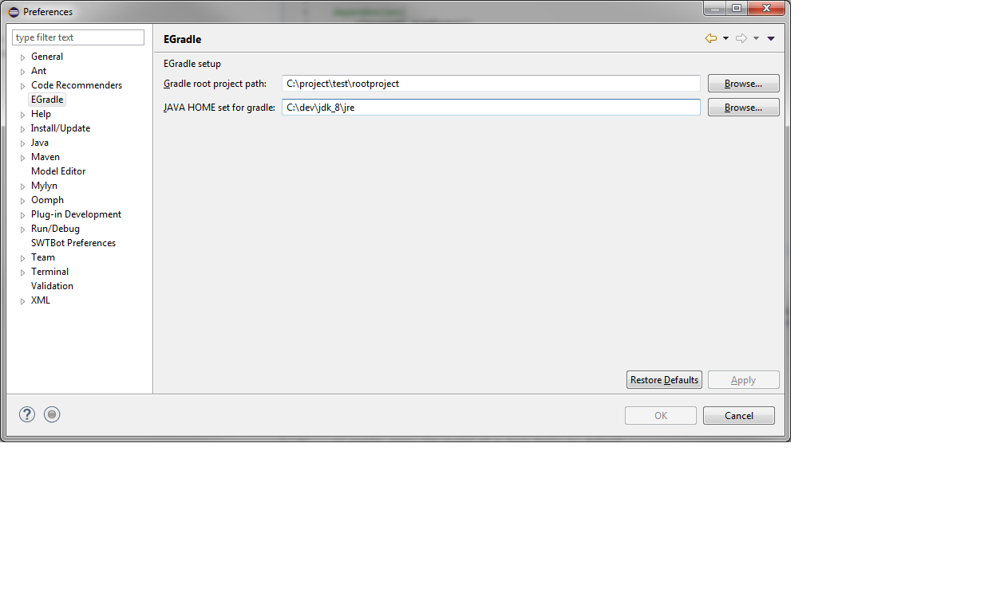

EGradle setup
Prerequisites
EGradle uses "bash" command. To get it on windows working, simply install
git for windows with gitbash (default).
Preferences
You have to setup JAVA_HOME and the root project folder for executions: 